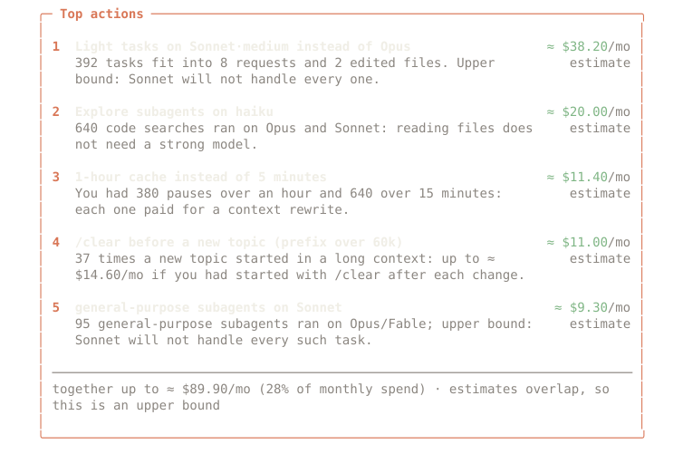
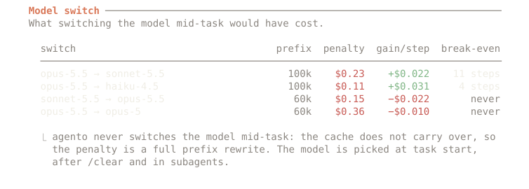

alpha · open source · Apache-2.0 · Claude Code ≥ 2.1.287
◆ agento
Spend less of your Claude Code budget, without losing quality.
A “System 1” for Claude Code. It picks the right model when a task starts, sends cheap work to cheap subagents, hands a plan from Opus to Sonnet in a clean context and stops agents that go in circles. Everything is counted in dollars or in % of your weekly limit, on your machine.
The audit reads your local transcripts and sends nothing anywhere. · See the benchmarks →
$ npx agento-cc audit spend · buckets · cache · TTL · tasks · subagents · setup · …

$
01 The problem
Your bill is mostly prompt cache, not tool output.
Claude Code sends the whole conversation with every step. The prompt cache makes each re-read cheap, but at agent scale those re-reads and cache writes are most of the bill. That changes what “saving tokens” has to mean.
44% cache writes plus 35% cache reads. Output is 10%; tool output and file reads are about 6%.
Independent SWE-bench study, arXiv 2607.12161The cache does not carry over between models, so a 100k context is written again: $0.25 instead of a $0.02 read. Sonnet saves ~$0.02 a step, so the switch pays off after ~10 steps, if Sonnet does as well.
Opus 5.5 / Sonnet 5.5 list prices, 2026-10-05In the same study one compressor raised the total by 48% and another by 6.8%. Compressed context broke edit anchors, agents re-read files, and every extra step re-reads the whole prefix.
Same study; agento measures dollars per resolved taskSo agento saves where the cache is cheap to touch
- At a clean point. The first prompt, after
/clearor compaction, after the cache went cold. A model chosen there costs no rewrite. - In subagents. Each has its own cache, so its model is free to pick: Haiku for reading and searching, Sonnet for a well-described piece of code.
- By effort, not model. On Opus 5.5, Sonnet 5.5 and Fable 5.1 the effort level can change without losing the cache. Thinking is billed as output.
- By dropping dead context. A new topic in a 120k conversation re-reads 120k on every step.
/clearstops that.

02 How it works
Decide once per task. Then stay out of the way.
agento is a Claude Code plugin with in-process hooks. When a task starts it asks “System 1”, built-in rules or a small trained model, whether a cheaper setup is enough. During the task it never touches the main model; it routes subagents, watches for loops and keeps the ledger. The full mechanics →
A status line you can glance at
Model and effort, spend so far, and whether the main cache is still warm. If you turn autopilot on, its choice arrives with an undo button.
◆ agento · opus·high · $1.84 · cache ● 41m ◆ agento · sonnet·med · 7d 63% · cache ● 41m subscriber: the 7-day limit instead of dollars ────────────────────────────────────────────────────────────◆ agento: sonnet·medium for this task Autopilot at a clean point (switching is free for the cache); was opus·max. Why: light-task words ×2. Back to opus·maxTurn autopilot offOK
One hint, at the start of a task
A light task on Opus at max effort gets a one-click suggestion, with its reason and an estimate. Autopilot can apply it for you; it is off by default.
> fix the typo in the README heading ────────────────────────────────────────────────────────────◆ Looks like a light task sonnet·medium is enough here (now opus·max). Why: light-task words ×2, short prompt (34 chars). Switching early in a task is cheap: the cache is empty or still small. ≈ −$0.40 on a task like this · estimate SonnetEffort mediumKeepDon't suggest
Plan on Opus, code on Sonnet
Discuss the architecture with Opus in plan mode. When you approve the plan, Sonnet writes the code from a clean context that holds only the plan.
◆ Plan approved The plan is saved to .agento/plans/ and Sonnet starts with ~8k of context instead of 112k. ≈ −$1.10 on a task like this · estimate Write the code on Sonnet — clean contextContinue on OpusDon't suggest
The /agento pane
What you spent (measured), what agento's own mechanisms saved (always marked as an estimate), hints, loops, and which classifier is active.
◆ agento · session 1h12m mode: balanced ────────────────────────────────────────────────────Spend $6.71 measured cache hit 94% · ● warm 41m Models opus ▇▇▇▇░░░░░░ 31 sonnet ▇▇▇▇▇▇▇▇▇▇ 84 Savings ≈ $2.12 (subagents $1.30 · hints $0.82) estimate Hints 4 shown · 2 accepted · 1 "don't suggest" Loops 1 (test failing for the 3rd time: auth.spec) Classifier rules-v1 · local ────────────────────────────────────────────────────ModeOrchestra: offAutopilot: off
Mock-ups built from the plugin's real strings; the amounts are illustrative.
03 Get started
Two commands. The first one changes nothing.
Run the audit
Spend, cache misses and their causes, light tasks on expensive models, subagents, dead context, setup. Node ≥ 20.
$ npx agento-cc audit $ npx agento-cc audit --since all --md report.md
Add it to Claude Code
Claude Code ≥ 2.1.287. Hints are on, autopilot is off, the main model is never changed mid-task.
> /plugin marketplace add <owner>/agento > /plugin install agento@agento > /agento
Train your own System 1
Label your own history with a judge on your GPU, distil a small student, and serve it locally. The plugin falls back to rules if anything goes wrong.
04 Principles
Rules agento does not bend.
Never switch mid-task
The main model changes only at a clean point, and only through a choice you can see. Inside a task, savings come from subagents and handoffs.
Never above your choice
agento will not raise the model or effort you picked. Your setup is the cost ceiling.
Nothing silently
Every hint shows a reason and an estimate. Every automatic action is visible, reversible and can be switched off.
Fail-open
If agento errors or times out, Claude Code behaves as if it were not installed.
Dollars, not tokens
Measured spend is marked “measured”; savings are always marked “estimate”. The unit is billed cost per resolved task.
All seven principles with examples: How it works.
05 What the audit found for me
One user's month, not a benchmark.
The author ran agento audit and the training pipeline on his own 30 days of Claude Code: one subscription user, 408 sessions, 71,511 requests, priced at API list prices. Nothing here is a measured saving; it shows where the money went and what a judge thinks could have been cheaper.
Cache writes 19%, output 15%, uncached input ≈ 0%. Cache hit ratio 99.2%. The bill is the long context being re-read.
author's audit · API-equivalentClaude Opus read 560 finished Opus/Fable tasks and said Sonnet or Haiku would have done 303 of them.
judge opinion on finished tasks, not a replayOn 34 tasks the author labelled by hand, the Opus judge agreed 50% of the time and under-routed 41%. That is why judge labels are not trusted as-is.
n = 34 · see benchmarks06 Train your own System 1
Your history shows what you chose, not what you needed.
Almost everything in a heavy user's history ran on Opus at high effort, so a model trained to imitate it learns “always Opus”. agento's labels are counterfactual instead: the cheapest setup that would have done the task as well, from a judge, from your own hindsight labels, and, where affordable, from replays.
- dataset buildTasks from your local transcripts, features and weak labels; secrets scrubbed.
- judge · labelA judge on any OpenAI-compatible server (vLLM on your GPU) reads finished tasks; you label a sample by hand as gold.
- Laya teacherFine-tuned on the GPU box. Only the cleaned dataset leaves your laptop, to your own server.
- e5-small student
multilingual-e5-small, ONNX: 35 ms p50 on CPU, 279 MB. - agento-brainA local daemon on a unix socket. Any error, or no answer in 400 ms, and the rules decide.
opus-v1, did not pass for the model choice, so there it only hints; its plan-first and delegate-explore heads are usable (results). GPU runbook (in Russian).07 Privacy
Your code stays on your machine.
No telemetry, no account, no trackers on this site either.
agento auditand the plugin run locally. No prompts, code or usage leave your machine.- The classifier is local. Rules run in-process; the trained student runs in
agento-brainon a unix socket. - Training is opt-in and goes where you point it. The judge talks to the server you name;
trainsends only the scrubbed dataset to your own GPU box. Your data never goes into public weights. - A future hosted classifier will be opt-in and receive only compact features.
08 Pricing preview
Free and local today. Paid tiers are only a plan.
- Audit, plugin, ledger, hints, handoff, loop guard
- Rules or your own trained student, on CPU
- The whole training pipeline
- Hosted teacher model on a GPU: more accurate than the CPU student
- Opt-in, compact features only
- Team reports
- Self-hosted teacher (Docker) for teams that cannot send prompts out
Nothing here is a commitment: paid tiers may change or never ship. The local version stays free and open source.
09 FAQ
Questions
Does it work on Pro/Max subscriptions?
Yes. A subscription charges nothing per token, but the weekly limit runs out. The audit shows API-equivalent amounts; the plugin shows your 7-day limit in the status line and, once it has calibrated on your own history, phrases hints as “≈ −0.6% of the weekly limit”. The calibration is an empirical estimate, and labelled so.
Does it send my code anywhere?
No. The audit and the plugin read local files and run locally. The only network traffic is the training you start yourself: the judge you point at a server, and train, which sends the scrubbed dataset to your own GPU box.
Will it switch models mid-task?
Never. Switching mid-task rewrites the whole cache (+$0.23 on a 100k context). The main model changes only at a clean point: the first prompt, after /clear or compaction, after the cache went cold. Autopilot is off by default; when on, it holds the cheaper setup for that one task and never runs /model, which would also change your default.
What if it's wrong?
A hint is one click to ignore, and “Don't suggest” turns that kind off for the project. An autopilot choice comes with a [Back to opus·max] button. agento never goes above your choice, the loop guard flags a stuck agent, and any error makes it step aside. A trained model ships only if it under-routes in at most 5% of held-out tasks; the first one did not, so for the model choice it only hints.
What does it cost?
Nothing: Apache-2.0. The rules and the local student cost no API calls. Judging your history costs a little if you use claude as the judge, or nothing on your own vLLM server; replays spend real limit, are opt-in and take a --budget-usd.
How much will it save me?
We don't know yet, and we won't make up a number. Run the audit to see an upper bound for your own history. A public benchmark of cost per resolved task against always-Opus, opusplan and rule routers is on the roadmap.